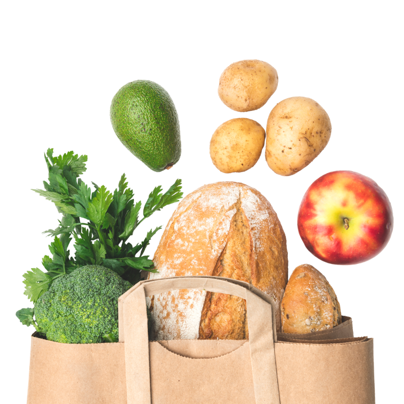
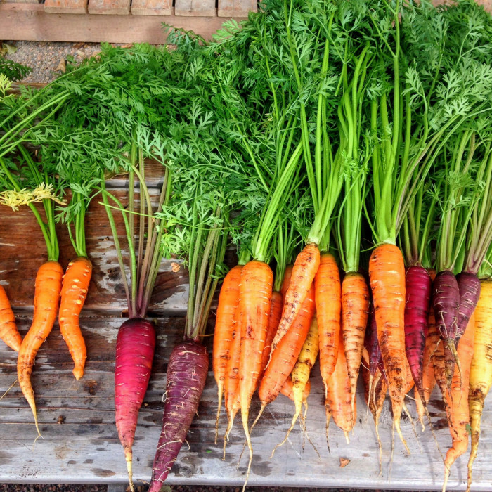

Welcome to maize & blue 〽️
Our Mission
To ensure members of the University of Michigan community—whether on a tight budget or physically restrained from getting to a grocery store—receive equitable access to healthy, nutritious, and nourishing food and the ability to prepare it for themselves or others.
What we provide
Food:
Produce, dairy, meat, bread, frozen and shelf-stable foods i.e. rice, cans, tuna, etc.-
KITCHEN & COOKING
Dishes, silverware, pots & pans, Tupperware, cutting boards, knives, and other kitchenware -
PERSONAL & HOUSEHOLD
Trash bags, toilet paper, cleaning supplies, hygiene products, school supplies, baby items and more